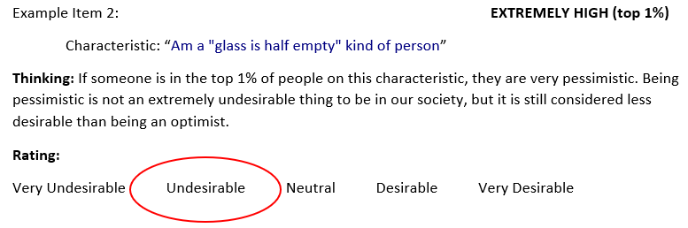
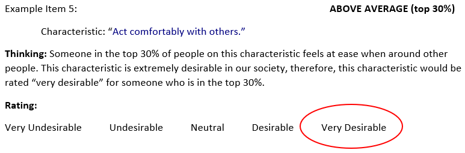
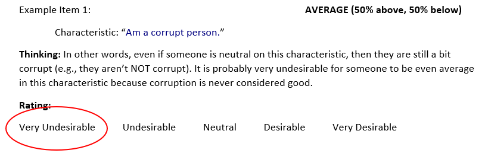
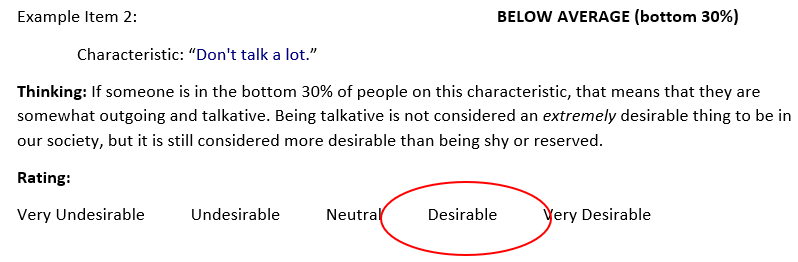
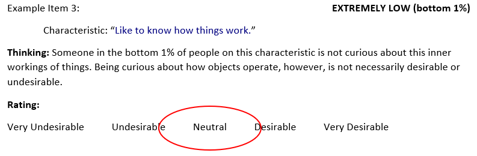

Welcome to our survey!
We want you to rate how desirable is it to be for someone to be, in our culture,
- extremely high (top 1% of all people)…
- above average (top 30% of all people)…
- neutral (e.g., completely average)…
- below average (bottom 30% of all people)…, and
- extremely low (bottom 1% of all people)…
…on a number of different characteristics.
Below we provide some examples of how we would like you to think and respond to “how valued” a person would be viewed by our culture, if they were deemed top 1%, top 30%, average, bottom 30% or bottom 1% for different characteristics:
TOP 1%:
This means that very, very few people are “higher” than the person along the characteristic.

TOP 30%:
This means that about a third of people are “higher” than the person along the characteristic.

AVERAGE:
This means that the person is perfectly “in the middle” along the characteristic (50% of people have “more” of the characteristic and 50% have “less).

BOTTOM 30%:
This means that about a third of people are “lower” than the person along the characteristic.

BOTTOM 1%:
This means that very, very few people are “lower” than the person along the characteristic.

We will be recording how long it takes for you to respond, so please respond as quickly but accurately as possible. The next few pages will be practice exercises to let you become familiar with the rating procedure – we will let you know when the practice ends and the actual data collection begins.
The task we’re asking you to do is unfamiliar to most people. Therefore, before we begin with the actual experiment, you will have the chance to practice with two items – you will have an opportunity to ask the experimenter questions as you respond to the practice questions.
The first item that you will be asked to provide ratings for is:
USE UNCATEGORIZABLE ITEM?
Please hit the "Next" button when you are ready to begin the practice session.
The item that you will be asked to provide ratings for is: USE UNCATEGORIZABLE ITEM?
USE UNCATEGORIZABLE ITEM?
USE UNCATEGORIZABLE ITEM?
USE UNCATEGORIZABLE ITEM?
USE UNCATEGORIZABLE ITEM?
The item that you will be asked to provide ratings for is: USE UNCATEGORIZABLE ITEM?
USE UNCATEGORIZABLE ITEM?
USE UNCATEGORIZABLE ITEM?
USE UNCATEGORIZABLE ITEM?
USE UNCATEGORIZABLE ITEM?
The item that you will be asked to provide ratings for is:
Do not like art.Do not like art.Do not like art.Do not like art.Do not like art.The item that you will be asked to provide ratings for is:
Find it difficult to get down to work.Find it difficult to get down to work.Find it difficult to get down to work.Find it difficult to get down to work.Find it difficult to get down to work.The item that you will be asked to provide ratings for is:
Think highly of myself.Think highly of myself.Think highly of myself.Think highly of myself.Think highly of myself.The item that you will be asked to provide ratings for is:
Know how to get around the rules.Know how to get around the rules.Know how to get around the rules.Know how to get around the rules.Know how to get around the rules.The item that you will be asked to provide ratings for is:
Act without thinking.Act without thinking.Act without thinking.Act without thinking.Act without thinking.The item that you will be asked to provide ratings for is:
Look down on others.Look down on others.Look down on others.Look down on others.Look down on others.The item that you will be asked to provide ratings for is:
Take charge.Take charge.Take charge.Take charge.Take charge.The item that you will be asked to provide ratings for is:
Laugh my way through life.Laugh my way through life.Laugh my way through life.Laugh my way through life.Laugh my way through life.The item that you will be asked to provide ratings for is:
Boast about my virtues.Boast about my virtues.Boast about my virtues.Boast about my virtues.Boast about my virtues.The item that you will be asked to provide ratings for is:
Do not enjoy watching dance performances.Do not enjoy watching dance performances.Do not enjoy watching dance performances.Do not enjoy watching dance performances.Do not enjoy watching dance performances.The item that you will be asked to provide ratings for is:
Enjoy examining myself and my life.Enjoy examining myself and my life.Enjoy examining myself and my life.Enjoy examining myself and my life.Enjoy examining myself and my life.The item that you will be asked to provide ratings for is:
Consider myself an average person.Consider myself an average person.Consider myself an average person.Consider myself an average person.Consider myself an average person.The item that you will be asked to provide ratings for is:
Seldom get mad.Seldom get mad.Seldom get mad.Seldom get mad.Seldom get mad.The item that you will be asked to provide ratings for is:
Can't stand weak people.Can't stand weak people.Can't stand weak people.Can't stand weak people.Can't stand weak people.Thank you!!
Your responses have been recorded – you can close this window now.